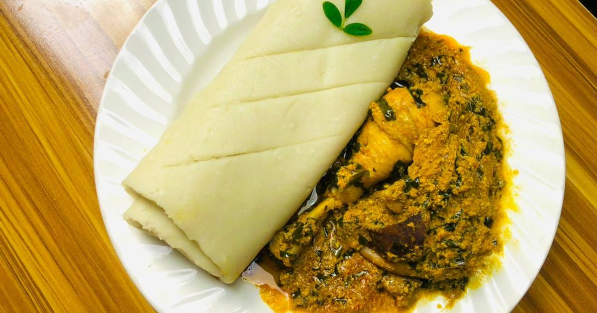

Pounded Yam and Egusi Soup Recipe
A hearty and traditional meal eaten by mostly the Edo's. It is perfect for lunch or dinner. Pounded Yam, a starchy dough-like side dish, pairs beautifully with Egusi Soup, a savory melon seed-based soup rich in flavors and nutrients.
Preparation Time
- Cooking: 1 hour
- Preparation: 15 minutes
- Total: Approximately 1 hour 15 minutes
Ingredients
For Pounded Yam:
- Water
- 2 medium-sized yams
For Egusi Soup:
- 1 cup ground egusi (melon seeds)
- 500g assorted meat (beef, goat, or chicken)
- 1 cup stockfish (optional)
- 1 cup spinach or bitter leaf (washed and chopped)
- 2 tablespoons palm oil
- 1 large onion (chopped)
- 2 scotch bonnet peppers (blended)
- 2 tablespoons ground crayfish
- Salt, to taste
- 2 seasoning cubes
- 4 cups of water or stock
Instructions
For Pounded Yam:
- Peel and cook the yam: Peel the yams and cut them into medium-sized cubes. Boil them in water for about 25-30 minutes or until soft.
- Pound the yam: Using a mortar and pestle, pound the cooked yam until it’s smooth and stretchy. Alternatively, use yam flour by mixing it with boiling water until a dough-like consistency is achieved.
- Serve: Shape into small mounds and set aside.
For Egusi Soup:
- Prepare the meat: Boil the assorted meat and stockfish with seasoning cubes, salt, and onions until tender. Set aside, reserving the stock.
- Cook the egusi: In a pot, heat the palm oil over medium heat and sauté the chopped onions and blended scotch bonnet peppers for 3-5 minutes.
- Add egusi: Stir in the ground egusi and cook for 5-10 minutes until it absorbs the oil and forms small lumps.
- Add stock and meat: Pour in the reserved stock and the cooked meat. Add the ground crayfish, dry pepper (optional), and seasoning cubes. Simmer for 15-20 minutes.
- Add vegetables: Stir in the chopped spinach or bitter leaf and cook for an additional 5 minutes.
- Serve: Pair the Egusi Soup with the prepared pounded yam.
Nutrition:
| Calories |
500kcal |
| Carbs |
40g |
| Protein |
30g |
| Fat |
25g |